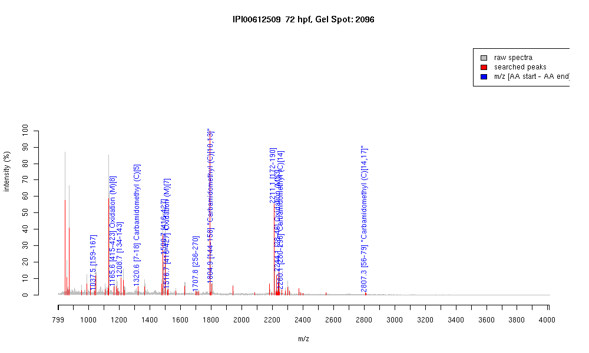

| Name | PREDICTED: similar to zinc finger protein 658 |
|---|---|
| MW | 52180.5 |
| PI | 9.6 |
| Mascot Protein Score | 67 |
| Masses (matched / unmatched) | 11 / 64 |

| Peptide | MZ (calc) | MZ (observed) | Error (DA) | Error (PPM) | Start | Stop | Modifications |
|---|---|---|---|---|---|---|---|
| SFSQIQSIK | 1037.5626 | 1037.5297 | -0.0329 | -32 | 159 | 167 | |
| KDYLSQHMK | 1165.567 | 1165.5903 | 0.0233 | 20 | 415 | 423 | Oxidation (M)[8] |
| LKQALEIHTR | 1208.7109 | 1208.6667 | -0.0442 | -37 | 134 | 143 | |
| EPTPCTCPQCGK | 1320.5381 | 1320.5964 | 0.0583 | 44 | 7 | 18 | Carbamidomethyl (C)[5] |
| DYLSQHMKIHTK | 1500.7628 | 1500.7131 | -0.0497 | -33 | 416 | 427 | |
| DYLSQHMKIHTK | 1516.7577 | 1516.7141 | -0.0436 | -29 | 416 | 427 | Oxidation (M)[7] |
| IHSGERPYTCQECGK | 1707.7577 | 1707.7933 | 0.0356 | 21 | 256 | 270 | |
| IHTGEKPFSCQQCGR | 1804.8217 | 1804.9097 | 0.088 | 49 | 144 | 158 | "Carbamidomethyl (C)[10,13]" |
| THTGEKPYNCQQCGKLF | 2211.0435 | 2211.1042 | 0.0607 | 27 | 172 | 190 | |
| VHMRIHTGEKPYICQQCG | 2244.0835 | 2244.0635 | -0.02 | -9 | 28 | 46 | Oxidation (M)[3] |
| VHMRIHTGERPYTCSQC | 2260.0532 | 2260.0593 | 0.0061 | 3 | 280 | 298 | Carbamidomethyl (C)[14] |
| IHVTIHTGEKPYTCTQCG | 2807.3604 | 2807.3013 | -0.0591 | -21 | 56 | 79 | "Carbamidomethyl (C)[14,17]" |